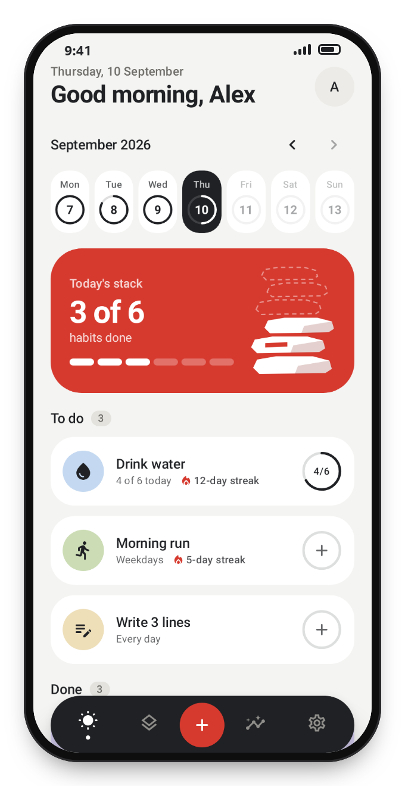
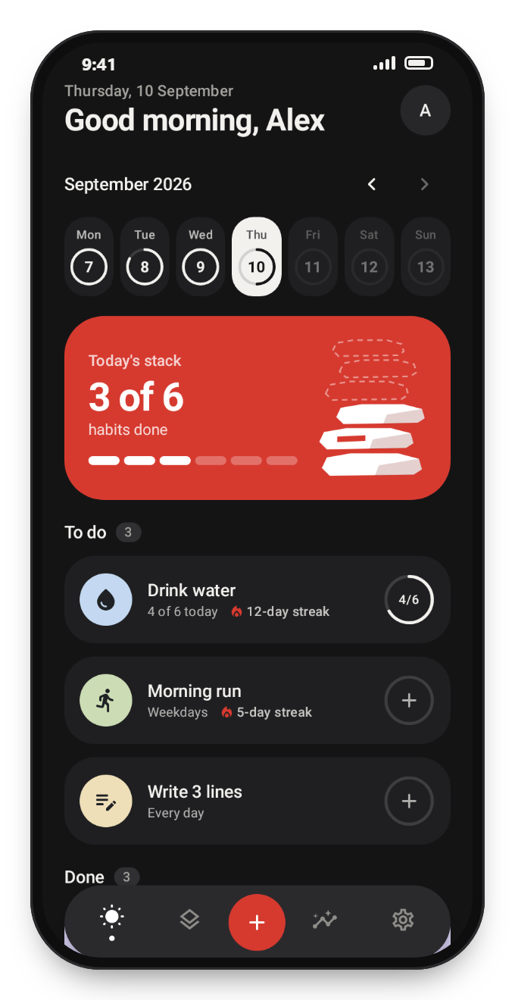

Free · Private · Android
Stack small wins. Cairn is a free habit tracker for Android that keeps your data on your phone.
Check in with one tap, keep honest streaks and watch weeks of progress pile up. No ads, no account, no tracking.
~ $ adb install Cairn.apk
Performing Streamed Install
Success
Features
Small daily habits, tracked properly.
One tap check-ins
Tap to add a stone, long press to take it back, or check in straight from the home screen widget. Goals like six glasses of water fill up as you go.
Streaks that make sense
Pick the days a habit runs on. Rest days never break a streak, and you can fill in yesterday if you forgot.
Reminders with a Done button
Set a time for each habit and check in right from the notification. An optional evening nudge only shows up if something is still open.
Insights
A 20-week heatmap for every habit, perfect days, a weekly chart and your longest streaks.
Private by default
No account, no ads, no analytics. Cairn doesn't even ask for internet access, so your habits never leave your phone unless you export a backup.
Made for every screen
Light and dark themes, English and Bulgarian, and layouts that fit phones, foldables and tablets.
Screenshots
Light and dark.
Cairn follows your system theme, or you can pick one in settings. The Today screen shows your week, today's stack and what's still left to do.


Install
Up and running in a minute.
Download the APK
Tap Download APK on your Android phone.
Open the file
Open it from the download notification or from the Files app.
Allow the install
If Android asks, allow installs from your browser for this file. You can turn it off again afterwards.
Start stacking
Open Cairn, pick a few habits and make your first check-in.
Cairn isn't on Google Play yet. Every version is published on GitHub Releases together with a list of what changed.
Source code
Nothing to hide.
The full source code is public on GitHub, so anyone can see exactly what Cairn does with their data. You can also check the app itself: it only asks to show notifications, to bring reminders back after a restart and to keep the phone awake for a moment while the widget updates. No internet access at all.
~ $ aapt2 dump permissions Cairn.apk | grep android.permission
uses-permission: name='android.permission.POST_NOTIFICATIONS'
uses-permission: name='android.permission.RECEIVE_BOOT_COMPLETED'
uses-permission: name='android.permission.WAKE_LOCK'
FAQ
Questions
Installing, updating and keeping your habits private, in short answers.
Is Cairn really free?
Yes. There are no ads, no in-app purchases and no subscription.
Is Cairn open source?
Cairn is source available. The full code is public on GitHub so anyone can read and check it, but the license doesn't allow copying, changing or republishing it. The app itself is free for everyone.
Do I need an account?
No. Cairn works offline and keeps your habits and history on your phone. Nothing is sent anywhere.
Is it on Google Play?
Not yet. Download the APK from this page or from GitHub Releases, where every version is published.
Is there an iPhone version?
No. Cairn is Android only for now.
Which Android versions are supported?
Android 8.0 (Oreo) and newer, on phones, foldables and tablets.
Can I move my habits to a new phone?
Yes. In Settings, tap Export backup and save the file. On the new phone, install Cairn and tap Restore backup.
How do I update?
Download the newest APK and install it over the current one. Your habits and history stay on the phone.